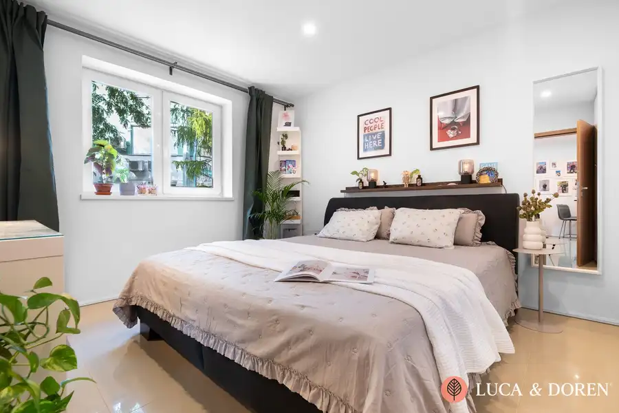
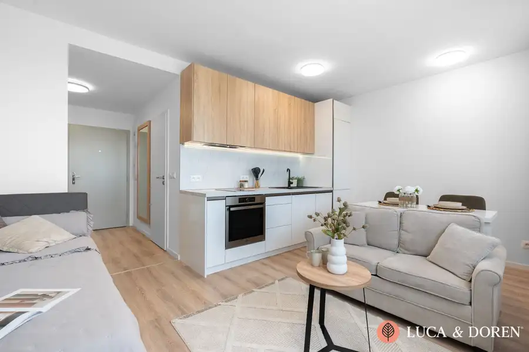

Luca & Doren | Byt v súkromnom areáli s výhľadom na Tatry
Štrba
- Dispozícia2-izbový
- Plocha55.7 m²
- Poschodie1. z 6
- StavKompletná rekonštrukcia
- VlastníctvoOsobné
O nehnuteľnosti
Luca & Doren ponúka na predaj presvetlený 2-izbový byt v projekte GOLEM uprostred prírody len 15 minút od Štrbského plesa s vlastnou terasou. Výhodou bytu je orientácia do tichého prostredia plného zelene a dispozícia, ktorá dodáva bytu praktickosť a pocit pohodlia. Možnosť využívať aj na krátkodobý prenájom alebo Airbnb.Hlavné benefity:•Vyhľadávaná lokalita v Tatrách•Súkromný areál s vlastnou rampou•Parkovanie na vlastnom pozemku•Praktická dispozícia•Vlastná terasa s výhľadom priamo do lesa•Množstvo úložného priestoru•Najlepšia orientácia na JZ•Spoločné priestory v suteréne bytového domu•Vhodný na investíciu alebo ako bývanieByt: Po vstupe do bytu vás privíta veľkorysá vstupná chodba, ktorá plynule vedie do svetlej dennej časti. Naľavo sa nachádza kúpeľňa s rozmerným sprchovým kútom a prakticky, opticky oddelenou toaletou.Denná časť je koncipovaná ako otvorený a vzdušný priestor, ktorý prirodzene spája obývaciu izbu s jedálenskou časťou a plne funkčnou kuchyňou. Príjemným bonusom kuchyne je francúzske okno s balkónom, ktoré priestor krásne presvetľuje.Nočná časť ponúka priestrannú spálňu, do ktorej sa pohodlne zmestia až dve manželské postele a veľká vstavaná skriňa. Izba pôsobí elegantne, pokojne a poskytuje priamy výstup na terasu – ideálne miesto na rannú kávu či večerný relax.Byt prešiel staršou, no veľmi vkusnou rekonštrukciou a aktuálne sa úspešne využíva na prenájom (vhodné aj ako investícia). Vďaka premyslenej dispozícii pôsobí interiér mimoriadne vzdušne a po otvorení okien vás očarí absolútny pokoj a ticho.Bytový dom: Veľkou prednosťou je uzatvorený súkromný areál s čistými a udržiavanými spoločnými priestormi, o ktoré sa pravidelne stará správca. Bytový dom je vybavený výťahom a rezidentom ponúka bohaté zázemie:•Spoločenská miestnosť / herňa•Sušiareň•Odkladací priestor na bicykle a lyžiareň•Samostatná pivnicaBezpečnosť a komfort: Vykurovanie je zabezpečené vlastným ústredným kúrením priamo v objekte. O vašu bezpečnosť a bezstarostné bývanie sa stará kamerový systém spojený s alarmom v celej budove.Lokalita: Štrba predstavuje strategický dopravný a turistický uzol podhoria Vysokých Tatier s priamym napojením na diaľnicu D1 a hlavný železničný ťah. Najväčšou výhodou lokality je bezprostredná dostupnosť do hôr – zrekonštruovaná ozubená železnica (zubačka) zo stanice Štrba vás dopraví priamo na Štrbské Pleso za 15 minút, zatiaľ čo krajské centrum Poprad s letiskom je vzdialené len 18 km (15 minút jazdy po D1). Obec disponuje kompletnou občianskou vybavenosťou pre celoročné bývanie vrátane základnej a materskej školy, zdravotného strediska, lekárne, pošty, bankomatov a siete obchodov či reštaurácií. Pre kupujúceho to znamená nižšiu vstupnú cenu za m² v porovnaní s tatranskými osadami pri zachovaní vysokej likvidity a celoročného potenciálu na krátkodobý či dlhodobý prenájom.Základné parametre:•Celková výmera: 52,43 m² (byt 43,90 m² + 11,8 m² terasa )•Cena: 199.000 EUR•Orientácia: JZ•Poschodie: 1/6Ak hľadáte výnimočný byt v overenej lokalite, dohodnite si obhliadku ešte dnes.Uvedená cena je konečná, pokiaľ sa zmluvné strany nedohodnú inak, a nenavyšuje sa o odmenu sprostredkovateľa. V cene je zahrnuté právne poradenstvo, vyhotovenie kúpnych zmlúv, hypotekárne poradenstvo a úhrada správnych poplatkov.Mgr. Marek OndreášLUCA & DOREN s. r. o.+421 948 180 616ondreas@lucadoren.sk
Parametre
| Bezpečnosť | Kamerový systém, Alarm, Elektronická brána, Elektronický zámkový systém |
|---|---|
| Cena vrátane energií | Nie |
| Druh | 2 izbový byt |
| Dátum zverejnenia | 6. 10. 2026 |
| Energetický certifikát budovy | V príprave |
| Orientácia | Juhozápadná, Južná |
| Podlažie | 1 |
| Počet nadzemných podlaží | 6 |
| Počet spální | 1 |
| Rok výstavby | 2011 |
| Stav nehnuteľnosti | Kompletná rekonštrukcia |
| Telekomunikácie | Internet |
| Typ | Predaj |
| Typ konštrukcie | Tehlová |
| Vlastníctvo | Osobné |
| Vybavenie | Technická miestnosť, Vyhradené parkovanie, Strážna služba, Bezbariérový prístup, Detské ihrisko, Záhrada, Kočikáreň, Komunitná záhrada, Zabezpečovacie zariadenie, Altánok / posedenie, Úschovňa bicyklov |
| Vykurovanie | Ústredné |
| Úžitková plocha | 55.7 m² |
Kde to je


Mohlo by Vás zaujímať

BytNové10 264 990 €Luca & Doren | Útulný byt po kompletnej rekonštrukcií so zelenými výhľadmi Ružinov, Bratislava 2-izbový52.43 m²1. podlažie Luca & Doren ponúka na predaj priestranný 2,5-izbový byt po kompletnej rekonštrukcii vo vyhľadávanej lokalite s dobrou dostupnosťou do…
BytNové10 Cena dohodouLuca & Doren | Vkusný byt v Ovocných Sadoch na prenájom Ružinov, Bratislava 1-izbový37 m²4. podlažie Luca & Doren ponúka na prenájom útulný 1-izbový byt v obľúbenom projekte Ovocné Sady na 4. poschodí. Byt s výmerou 32m² je orientovaný na…